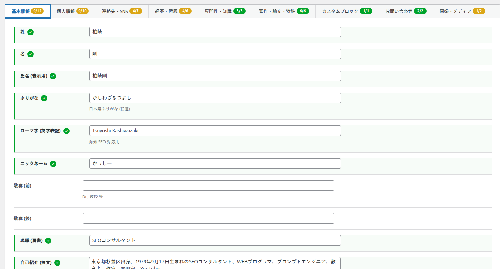
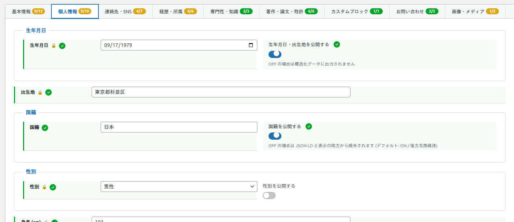
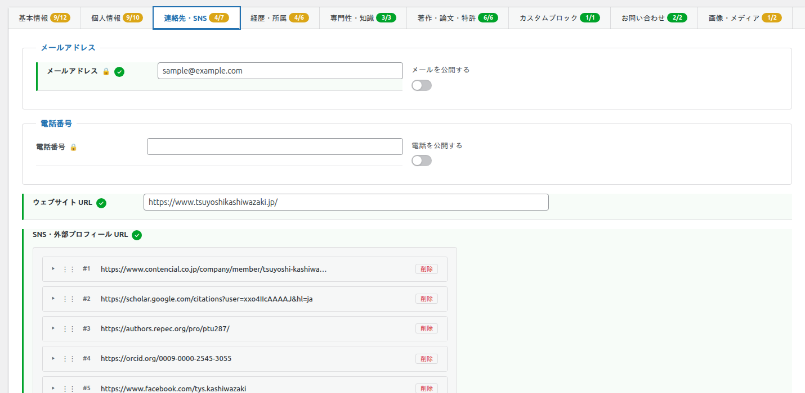
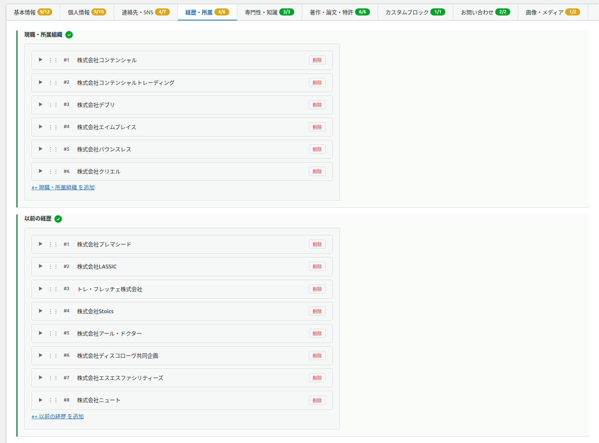
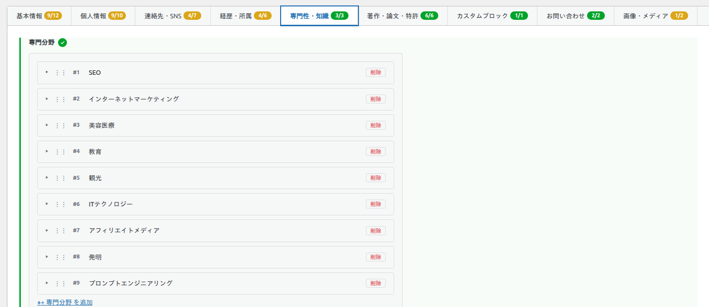
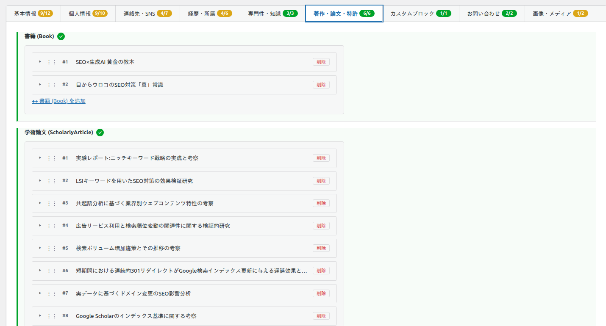
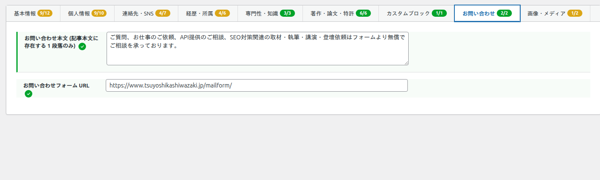
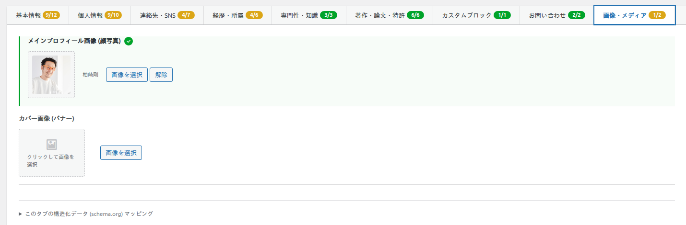

プロフィールの作成・編集
プロフィールの入力フォームは 9 つのタブに分かれています。各タブには入力済み項目数を示す完成度ゲージ (例: 9/12) が表示されます。このページでは全 9 タブの入力項目を 1 つずつ解説します。
入力タブの一覧
入力は必要なタブだけ埋めれば構いません。空欄の項目はフロントにも構造化データにも出力されません。各表の「構造化データ」列は、その項目が schema.org のどのプロパティとして出力されるか (「—」は出力なし) を示します。
| # | タブ | 主な内容 |
|---|---|---|
| 1 | 基本情報 | 氏名・肩書・自己紹介・来歴 |
| 2 | 個人情報 | 生年月日・性別など (公開制御つき) |
| 3 | 連絡先・SNS | メール・電話・SNS・動画チャンネル |
| 4 | 経歴・所属 | 現職・以前の経歴・学歴・資格・受賞・趣味 |
| 5 | 専門性・知識 | 専門分野・対応言語・スキル |
| 6 | 著作・論文・特許 | 書籍・論文・特許・商標・取材・講演 |
| 7 | カスタムブロック | 任意名称の繰り返しコンテンツ |
| 8 | お問い合わせ | 問い合わせ本文・フォーム URL |
| 9 | 画像・メディア | 顔写真・カバー画像 |
多くの項目には schema.org のプロパティが割り当てられており、入力するだけで 構造化データ に反映されます。鍵アイコン (🔒) が付いた項目は個人情報 (PII) で、公開チェックを ON にしない限り出力されません。
1. 基本情報
氏名・肩書・自己紹介・来歴など、プロフィールの中心となる情報を入力します。入力済みの項目には緑色のチェックが付きます。

| 項目 | 形式 | 説明 / 構造化データ |
|---|---|---|
| 姓 | テキスト | Person.familyName |
| 名 | テキスト | Person.givenName |
| 氏名 (表示用) | テキスト | フロントの見出し・Person.name に使用 |
| ふりがな | テキスト | 日本語ふりがな (任意) / 出力 — |
| ローマ字 (英字表記) | テキスト | 海外 SEO 対応用 / Person.alternateName |
| ニックネーム | テキスト | Person.alternateName |
| 敬称 (前) | テキスト | Dr., 教授 等 / Person.honorificPrefix |
| 敬称 (後) | テキスト | Person.honorificSuffix |
| 現職 (肩書) | テキスト | Person.jobTitle |
| 自己紹介 (短文) | テキストエリア | 1〜3 行のプレーンテキスト / Person.description |
| 来歴 (長文・リッチ) | リッチエディタ | フロント表示用 (HTML 可) / 出力 — |
| 代名詞 | テキスト | he/him, she/her, they/them 等 / Person.pronouns |
2. 個人情報
生年月日・性別などの個人情報 (PII) を入力します。これらは 公開チェックを ON にしない限りフロントにも構造化データにも出力されません。生年月日と出生地は 1 つのチェックでまとめて、身長と体重も 1 つのチェックでまとめて制御します。

| 項目 | 形式 | 説明 / 構造化データ |
|---|---|---|
| 生年月日 🔒 | 日付 | Person.birthDate |
| 出生地 🔒 | テキスト | Person.birthPlace.name |
| 生年月日・出生地を公開する | チェック | 初期値 OFF。OFF なら上記 2 項目を出力しない |
| 国籍 | テキスト | Person.nationality.name |
| 国籍を公開する | チェック | 初期値 ON (後方互換)。OFF なら国籍を出力しない |
| 性別 🔒 | 選択 (男性 / 女性 / その他) | Person.gender |
| 性別を公開する | チェック | 初期値 OFF |
| 身長 (cm) 🔒 | 数値 | Person.height |
| 体重 (kg) 🔒 | 数値 | Person.weight |
| 身長・体重を公開する | チェック | 初期値 OFF。OFF なら身長・体重をまとめて出力しない |
3. 連絡先・SNS
メール・電話・ウェブサイト・SNS・動画チャンネルを入力します。メールと電話は PII のため、それぞれ公開チェックが必要です。SNS と動画チャンネルは行を追加して複数登録できます。

| 項目 | 形式 | 説明 / 構造化データ |
|---|---|---|
| メールアドレス 🔒 | メール | Person.email (公開チェック ON 時のみ) |
| メールを公開する | チェック | 初期値 OFF |
| 電話番号 🔒 | テキスト | Person.telephone (公開チェック ON 時のみ) |
| 電話を公開する | チェック | 初期値 OFF |
| ウェブサイト URL | URL | Person.url |
| SNS・外部プロフィール URL | 繰り返し (URL / サービス名) | Person.sameAs (配列) |
| 動画配信チャンネル | 繰り返し (チャンネル名 / プラットフォーム / URL) | フロント表示用 / 出力 — |
4. 経歴・所属
現職・以前の経歴・学歴・資格・受賞・趣味を入力します。各セクションは行を追加して複数登録でき、ドラッグハンドルで並べ替えできます。

| 項目 (繰り返し) | サブ項目 | 構造化データ |
|---|---|---|
| 現職・所属組織 | 組織名 / 組織 URL / 役職 / 在任開始 / 在任終了 (現職は空) | Person.worksFor (Organization) |
| 以前の経歴 | 組織名 / 役職 / 在任開始 / 在任終了 / 説明 | 出力 — |
| 学歴 | 学校名 / 学校 URL / 学位 / 卒業年月 | Person.alumniOf (EducationalOrganization) |
| 資格・認定 | 資格名 / 発行機関 / 取得日 / 有効期限 / 証明 URL | Person.hasCredential |
| 受賞・表彰 | 賞名 / 受賞日 / 授与機関 / 関連 URL | Person.award |
| 趣味・特技 | テキストエリア (1 項目)。[表示名](https://example.com/) の形で書いた部分はリンクになります | 出力 — |
フロントでの在任期間の表示: 「現職・所属組織」と「以前の経歴」の在任開始・在任終了は、フロントでは「在任期間」の 1 列にまとめて 2012-06-26 ～ 2019-06-30 のように表示されます。現職・所属組織で在任終了を空にした行は 2012-06-26 ～ 現在 と表示されます。どちらか片方だけ入力した行は 2015-02-01 ～ のように入力した側だけを表示し、どちらも入力していない行は空欄になります。すべての行が空欄のときは「在任期間」の列そのものを表示しません。
趣味・特技にリンクを入れる: 趣味・特技の文中で [表示名](https://example.com/) と書くと、「表示名」の部分がリンクになります (例: 陶芸 ([工房のサイト](https://example.com/)))。リンクにできるのは http:// または https:// で始まる URL だけで、リンクは新しいタブで開きます。表示名に角かっこ [ ] は使えません。URL に半角スペースや丸かっこ ( ) が含まれるとリンクにならないため、丸かっこは %28 %29 に置き換えてください。HTML タグは使えません (入力したタグはそのまま文字として表示されます)。
5. 専門性・知識
専門分野・対応言語・スキルを入力します。E-E-A-T (専門性・権威性・信頼性) を補強する重要な項目です。

| 項目 (繰り返し) | サブ項目 | 構造化データ |
|---|---|---|
| 専門分野 | トピック / Wikipedia・関連 URL | Person.knowsAbout |
| 対応言語 | 言語名 / 言語コード (ja, en 等) | Person.knowsLanguage |
| スキル | スキル名 / レベル | Person.skills |
6. 著作・論文・特許
書籍・学術論文・特許・商標・取材・講演を繰り返し項目として何件でも登録できます。ここに入力した実績は、フロント表示に加えて schema.org の各型 (書籍 = Book、論文 = ScholarlyArticle、特許 = CreativeWork など) として出力され、Google や AI 検索に「業績のある人物」として認識されやすくなります。

| 項目 (繰り返し) | サブ項目 | 構造化データ |
|---|---|---|
| 書籍 | タイトル / ISBN / 出版社 / 出版日 / URL / 表紙画像 / 概要 | Person.owns (Book) |
| 学術論文 | タイトル / DOI / 発行日 / 更新日 / 出版誌 / URL / PDF URL / 論文サムネイル / 要旨 | Person.owns (ScholarlyArticle) |
| 特許 | 特許名 / 特許番号 / 出願番号 / 取得・出願日 / URL / 特許図面 / 説明 | Person.owns (CreativeWork) |
| 商標登録 | 商標名 / 登録番号 / 出願日 / 区分 / URL | 出力 — |
| 取材・執筆・監修 | タイトル・メディア名 / 発行元 (法人名) / 掲載日 / 更新日 / URL / 種別 (取材・執筆・監修) / 著者・執筆者 / サムネイル画像 | Person.subjectOf (Article) |
| 講演・セミナー | イベント名 / 主催 / 開催日 / 終了日 / 会場 / 会場住所 / イベント画像 / URL | Person.performerIn (Event) |
7. カスタムブロック
「公開中のツール」など、標準項目に当てはまらない任意名称のコンテンツを追加できます。詳しい使い方は「カスタムブロックとショートコード」のページを参照してください。

| 項目 | サブ項目 | 上限 / 構造化データ |
|---|---|---|
| カスタムブロック (任意名称) | 各項目: 見出し / 説明 / URL / 画像 | 最大 20 ブロック・各 50 項目 / 出力 — |
8. お問い合わせ
問い合わせの案内文とフォームの URL を入力します。フロントのお問い合わせセクションに表示されます。

| 項目 | 形式 | 説明 / 構造化データ |
|---|---|---|
| お問い合わせ本文 | テキストエリア | 案内文 (1 段落) / 出力 — |
| お問い合わせフォーム URL | URL | フォームへのリンク / 出力 — |
9. 画像・メディア
顔写真とカバー画像を WordPress メディアライブラリから選択します。顔写真は構造化データの画像としても使われます。

| 項目 | 形式 | 説明 / 構造化データ |
|---|---|---|
| メインプロフィール画像 (顔写真) | 画像 | フロントの顔写真・Person.image |
| カバー画像 (バナー) | 画像 | フロントのバナー / 出力 — |
画像は WordPress メディアライブラリにアップロード済みのものから選択します。各タブの下部にある「このタブの構造化データ (schema.org) マッピング」を開くと、その場で出力対象のプロパティを確認できます。